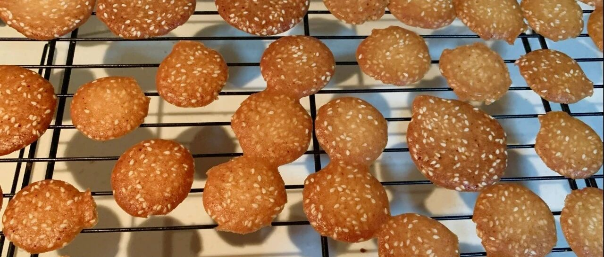

蛋白芝麻脆片 - 消耗蛋白的好方法
最近在学校补一门课，不知道为啥困的不行，发个存货。也是非常好做且容易上手的小零食。
柠檬酱的残余烘焙原料之二，五个蛋白，真的够受的。所以介绍几个消耗蛋白的好方法。
（我怎么做了这么多蛋白糖。。。）小山卷也是会留下蛋白呢。。。。我个人觉得，比起蛋白脆饼，还是这个芝麻脆片，更香更好吃。
前面还有一个“杏仁瓦片”的方子，当然，我觉得瓦片更好吃一些。哈哈。

这个方子，有模具当然更好，没有模具用勺子摊也可以的，只是一定要有间隔。
模具长这样（图源是淘宝）。一定要看好自己烤箱的尺寸，一定要看好洞洞的大小！！！经验之谈啊！！


蛋白加糖搅打成这样就可以了，不需要打发。


我喜欢焦色深一点的，吃起来特别脆。如果你是小烤箱的话，注意别烤糊了哈。

原创字数还不够啊，那我就再多说两句别的。最近孩子上学，听到好多乱七八糟的事情，跳楼啊，自杀组织啊啥的。我想现在的孩子可能比我们能更多的接触社会，也需要更好的辨识世界。做父母挺难的，比我们的父母要难，所以，我们才要更好的生活。吃点脆片吧，嘎嘣嘎嘣嘎嘣嘣.....